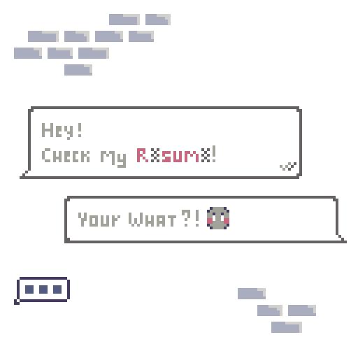

<!DOCTYPE html>
<html lang="en-US">

<head>
  <Title>Danilo Enju | Accessibility Insights</Title>
  <meta name="viewport" content="width=device-width, initial-scale=1.0">
  <link rel="stylesheet" href="css/style.css">
  <link rel="stylesheet" href="css/modal.css">
  <link rel="stylesheet" href="css/preloader.css">
  <link rel="preconnect" href="https://fonts.googleapis.com">
  <link rel="preconnect" href="https://fonts.gstatic.com" crossorigin>
  <link href="https://fonts.googleapis.com/css2?family=Noto+Sans+Mono&display=swap" rel="stylesheet">
  <link href="https://fonts.googleapis.com/css2?family=Noto+Sans+Mono:wght@500&display=swap" rel="stylesheet">
  <link href="https://fonts.googleapis.com/css2?family=Jersey+10&display=swap" rel="stylesheet">
  <link rel="icon" type="image/png" href="img/heart.png">
</head>

</html>
<div class="preloader">
  
</div>

<body>
  <div class="header" id="stickyHeader">
    <div class="link-wrapper">
      <a href="index.html" class="linkText">Home</a>
      <a href="interfaces.html" class="linkText">UI</a>
      <a href="personal.html" class="linkText">Art</a>
      <div class="linkTextHighlight">Resources</div>
      <a href="curriculum.html" class="linkText">About</a>
    </div>
  </div>

  <div class="bg-wrapper">
    
    <div class="textbox">
      <div class="title">
        What is this?
      </div>
      <div class="description">
        Hello there! This is where I write a little bit of insights and knowledge I acquired throughtout the years in
        the industry, as a way to share knowledge to those who are starting or are curious about the UI world outside of
        what's seen in game!
        <br><br>
        It covers a couple of topics I'm passionate about in a varying level of details. This definitively isn't the
        answer to all accessibility problems we face in this medium, but a small glimpse into the amount of
        positive impact we can make by acknowledging these problems, and trying to solve them.
      </div>
    </div>
  </div>

  
  <br>

  <div class="bg-wrapper-reverse">
    
    <div class="textboxLarge">
      <div class="title">
        Colour Blindness
      </div>
      <div class="description">
        When we cover accessibility, default option we expect from big games are accessible colour and high contrast
        options, since colour blindness is a fairly common condition, especially for men.
        <br><br>
        But there isn't really an easy solution for it, and for smaller games where the budget is tighter, building an
        alternative colour scheme, filter, or a fancy accessible options for the UI is just too much work to fit in the
        scope of the project, and even for big blockbuster games, the maintanance cost is not cheap.
        <br><br>
        So understanding how to mitigate colour dependency is the key to create a friendly and accessible colour
        palette from the start, and hopefully have a very friendly colour scheme that is not only beautiful to look at,
        but also accessible so everyone can enjoy them!
        <br><br>
        Easier said than done, certainly! Even this website is far from perfect and it only has 4 colours! But it's
        important to acknowledge the problem, and use your good designer sense(which is asking around for opinion and
        feedback) to mitigate it as much as you can.
        <br><br>
        <span class="accentText">TL;DR</span><br>
        Avoid common problematic colour combinations when possible, such as Red and Green of similar tone,
        and work with contrast even if you are using accessible colours!
      </div>
    </div>
  </div>

  
  <br>

  <div class="bg-wrapper-reverse">
    
    <div class="textboxLarge">
      <div class="title">
        Contrast
      </div>
      <div class="description">
        Contrast is the universal tool of an accessible UI: It doesn't rely on colours, makes everything more readable
        and can direct the eye for a nice and elegant visual hierarchy.
        <br><br>
        So before adding colour to differentiate your on/off toggles, warnings, or anything that is colour coded, try to
        work with the contrast first.
        <br><br>
        The right contrast can communicate if a button is disabled, where the focus is, placeholder
        text for inputs, a toggled on/off switch and so much more.
        <br><br>
        An Interface with poor contrast can kill the experience even for those without colour vision deficiency and have
        a 20/20 vision!
        <br><br>
        <span class="accentText">TL;DR</span><br>
        Try to create a monochromatic UI to work with contrast, and use the contrast to convey the message instead of
        relying on colours!
      </div>
    </div>
  </div>

  
  <br>

  <div class="bg-wrapper-reverse">
    
    <div class="textboxLarge">
      <div class="title">
        Fonts and Glyphs
      </div>
      <div class="description">
        Fonts is a very complex and hard subject, so I'll cover the very basics for an accessible UI. You don't need to
        be an expert type designer or download it from a fancy website to get a good and reliable font for your game.
        <br><br>
        We have access to a unlimited amount of paid and free fonts online, as well as open source fonts with multiple
        language support. You can even make your own font if needed, but when it comes to accessibility, we have to
        limit ourselves and choose from a limited, yet still impressively vast amount of fonts that support certain
        features like supplement latin glyphs (So we can safely write words like Fa&ccedil;ade,
        R&eacute;sum&eacute;, Se&ntilde;or etc.) and fonts for different alphabets (Japanese, Hangul, Cyrillic
        etc.)
        <br><br>
        Not only it needs to support the language you are developing to, but also think of how you want them to look
        like! Keep in mind that sans serif fonts are generaly favoured as a more accessible choice, even though most
        studies are not conclusive on the matter, it doesn't hurt to be on the safer side!
        <br><br>
        <span class="accentText">TL;DR</span><br>
        Find a font that support the languages you plan to localise to. Do give preference to sans serif fonts, but it
        is generally okay to use a stylised font if used in a big header with low word count and good contrast.
      </div>
    </div>
  </div>

  
  <br>

  <div class="bg-wrapper-reverse">
    
    <div class="textboxLarge">
      <div class="title">
        Font Size & Line Height
      </div>
      <div class="description">
        Once you've chosen a suitable font for all your needs, it's time to adjust them for you game's needs!
        <br><br>
        The recommended minimum font size for consoles games are 26px for 1080p, with an option to scale up for larger
        resolution if your UI is not scaling to match the higher resolutions.
        <br><br>
        For a lot of games, a 26px will just not fit. Especially those with dense, complex UI with a lot of information.
        And if you need to go below 26px, try to stick to 20px minimum, 18px for the absolute minimum, and think of ways
        to improve the readability by using alternative style like semi-bold or a higher contrast.
        <br><br>
        It's also important to set the correct space between the each text lines, also known as line height. The simple
        rule is to use 1.5x height for any paragraph longer than 2 lines of text!
        <br><br>
        For example: for a paragraph using 30px size font, aim to use a 45px line height(30&times;1.5) so each lines are
        separated enough to give a better distinction between them. The importance of it grows with the amount of lines
        your text have!
        <br><br>
        <span class="accentText">TL;DR</span><br>
        Try to stick to a minimum of 26-20px font size with good contrast, 1.5x line height for any paragraph longer
        than 2 lines and don't forget to scale the font for larger displays!
      </div>
    </div>
  </div>

  
  <br>

  <div class="bg-wrapper-reverse">
    
    <div class="textboxLarge">
      <div class="title">
        Font Style & Text Width
      </div>
      <div class="description">
        The key to a successful text is not only in the font itself, but how to fit them perfectly in your design.
        <br><br>
        When displaying a large paragraph, avoid using justified or centre aligned text. Left/Right aligned block of
        text is much easier to read due to the clear anchor point and an even spacing between the words.
        <br><br>
        Avoid using Title Case for any text longer than a couple words (Title Case Is When Every Word Starts With A
        Capital Letter Like This). and if you are thinking about using UPPERCASE to commucate yelling, or just to
        highlight a word, keep in mind that not all alphabet has different casing for each letter! Consider using
        <b>Bold</b> or something different if needed.
        <br><br>
        Lastly, try to keep your lines no longer than 80 characters long (or around 40 if your language doesn't have
        space between words or are full-width glyphs like Japanese, Korean and Chinese). Long lines can break the
        player's neck trying to read the whole sentence!
        <br><br>
        <span class="accentText">TL;DR</span><br>
        Avoid justified or centre aligned texts with multiple lines. Use different casing only if necessary and
        keep the width of your text in check: 80 charactes long or 40 for languages without space between words!
      </div>
    </div>
  </div>

  <br><br>

  <div id="myModal" class="modal">
    
  </div>

  <div class="scrollToTop" id="scrollToTop">
    
  </div>

  <div class="footer">2025 / Danilo Enju</div>

</body>
<script src="js/preloader.js"></script>
<script src="js/modal.js"></script>
<script src="js/scrollTrigger.js"></script>

</html>